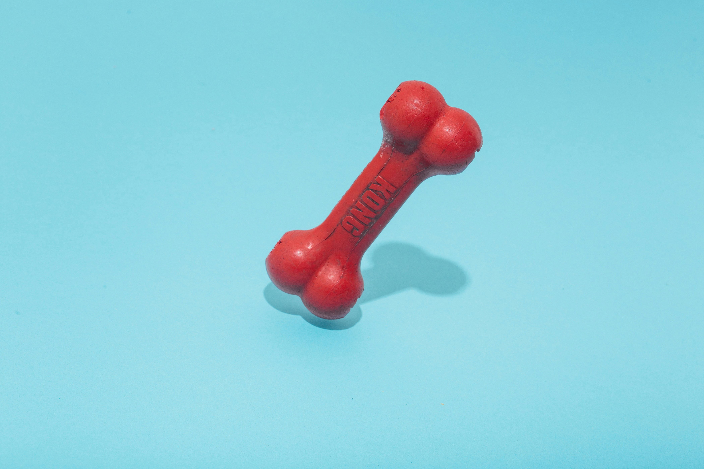

ベルとまろが普段から気に入っているものや、 お気に入りのお出かけスポットを紹介します。

ベルは音が鳴るぬいぐるみが大好きです。 投げてもらうと、何度も嬉しそうに持ってきます。
まろは引っ張り合いができるロープがお気に入りです。 遊び始めるとなかなか離してくれません。
おやつの袋を開ける音がすると、 ベルはすぐに走ってきます。 特にささみのおやつがお気に入りです。
まろはサクサクした小さなクッキーが大好きです。 食べ終わっても、まだ欲しそうに見つめてきます。
ベルとまろのお気に入りのお出かけスポットです。 広いドッグランや自然の中で、 のびのびと過ごすことができます。
ベルとまろがよく訪れるお気に入りの場所です。 季節の景色を楽しみながら、 のんびり散歩をしています。